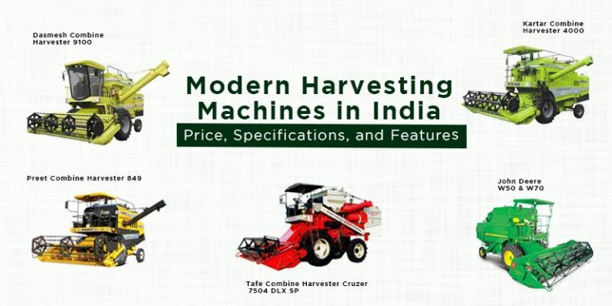

Rental services
Tractors and farming equipment have modernized in the last few years, thanks to technology and digital advancement.
Now, if your tractor is outdated, or you dont own a range of equipment, you can easily avail agriculture equipment rental from us.
By providing farm equipment for rent we will help you prepare your land, protect your crop and harvest more effectively and efficiently.

Paddy crop is being raised in more than 500 padasekharams, spread over 25,000 hectares, in the district this crop season. The harvesting season, which begins in February, will go on till May. Around 240 harvesting machines will be required for the purpose. As many as 78 harvesting machines are available in the district. The required number of machines will be brought from other districts and neighbouring States.

The above mentioned Harvesting tools and machines will br provided for low cost
Book now!! Hurry up!!